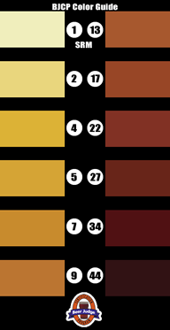

The style categories have been extensively revised from previous editions of the Style Guidelines. In some cases, style parameters, descriptions, and well-known commercial examples have been changed. Please familiarize yourself with the new Guidelines before using them.
The style categories have been renumbered, reordered and recategorized. Please double-check the Guidelines to ensure the style number matches the name you are referencing.
Note that SRM is a measure of beer color density more than hue/tint. Keep this in mind when attempting to use only SRM numbers when describing beers. Within these Guidelines, beer color descriptors generally follow this mapping to SRM values:
Color Descriptor
SRM Value
Straw
2 - 3
Yellow
3 - 4
Gold
5 - 6
Amber
6 - 9
Deep amber / light copper
10 - 14
Copper
14 - 17
Deep copper / light brown
17 - 18
Brown
19 - 22
Dark brown
22 - 30
Very dark brown
30 - 35
Black
30 +
Black, opaque
40 +

Notes to Brewers:
Some styles require additional information to help judges evaluate your beer. Read the Guidelines carefully and provide the required information. Omitting required information will likely result in a mis-judged beer.
If you enter a specialty or experimental beer not identified in the Guidelines, or use unusual ingredients, please consider providing supplemental information so the judges can properly understand your beer and intent.
Notes to Organizers:
Please ensure that supplemental information submitted by brewers is available to the judges.
If brewers omit required information, please seek clarification from the brewers before the competition date.
You are free to group style categories and sub-categories in whatever logical groupings you wish for the purpose of your competition, taking into account the number of entries and available judges.
You are free to split and regroup style categories for the purpose of your competition, if you feel that a different grouping would be beneficial to your entrants. You are not constrained to keep all sub-categories within a major category together when constructing flights.
Notes to Judges:
Understand that most beer styles are not defined by a single beer. Many styles are quite broad and can encompass multiple stylistically accurate variants. Do not let your understanding of a single beer limit your appreciation of the full range of each beer style.
You are free to judge beers in a flight in whatever order makes sense to you, although you should try to sequence the beers in a manner that allows you to preserve your senses and to fairly evaluate each beer.
Pay careful attention to the modifiers used in describing the styles. Look for guidance on the magnitude and quality of each characteristic. Notice that many characteristics are optional; beers not evidencing these non-required elements should not be marked down. Phrases such as "may have," "can contain," "might feature," "is acceptable," "is appropriate," "is typical," etc. all indicate optional elements. Required elements are generally written as declaratory phrases, or use words such as "must" or "should." Elements that must not be present often use phrases such as "is inappropriate," "no," or "must not."
Seek to understand the intent of the style categories and to judge each beer in its entirety. Don't overly focus on single elements. Look to the overall balance and character of the beer for your final opinion.
If a style guideline calls for required information from the brewer but this information has not been provided to you, please request it from the competition organizer. If the organizer does not have the information, then make a quick evaluation and decide how you wish to categorize the entry. Make note of it on your scoresheet and then judge it as such. It may not always be accurate, but it's the best you can do under the circumstances. Do not overly penalize the brewer for missing information; it might not be his fault. Do the best you can and use common sense.
If you come across a beer that is clearly out of style, check with the organizer to make sure the entry has been properly labeled and/or categorized. Handling errors do occur.
Acknowledgements:
The committee would like to acknowledge the significant effort made by the 1998-1999 style committee in revising and updating the 1997 guidelines. Their work has been extended and expanded, but not forgotten. Their names appear on the title page of this document.
The committee thanks the volunteer reviewers and individual contributors whose efforts improved the guidelines. Those who helped in the development or review are listed on the title page of this document.
The 1997 BJCP guidelines were derived from the New England Homebrew Guidelines, and were primarily authored by Steve Stroud, Pat Baker and Betty Ann Sather. Mead guidelines were added to the 1997 guidelines based on the work of Tom Fitzpatrick, Steve Dempsey, Michael Hall, Dan McConnell, Ken Schramm, Ted Major and John Carlson.